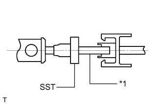

SUSPENSION CONTROL SYSTEM (w/ Air Suspension) > PRECAUTION |
| 1.WHEN LIFTING VEHICLE |
When jacking up or lifting the vehicle, stop operation of the air suspension control system by pressing the height control off switch.
| 2.DISCONNECTION AND CONNECTION OF HEIGHT CONTROL TUBE (TYPE 1) |
Disconnect the height control tube.
Pinch section "A" of the No. 1 connector and pull it from the housing.
| *1 | Housing |
| *2 | No. 1 Connector |
| *3 | Air Tube |
|  |
Install SST to the tube.
| *1 | Air Tube |
Insert SST into the housing to expand the claw of the No. 2 connector in the housing.
| *1 | Plate |
| *2 | No. 2 Connector |
| *3 | O-Ring |
| *4 | Air Tube |
Pull out the tube with SST inserted.
Insert a screwdriver into the circular hole in the housing and remove the No. 2 connector, 2 O-rings and plate from the housing.
Install 2 O-rings and the plate.
Apply MP grease No. 2 to 2 new O-rings and the plate and install them to a straight tube or equivalent.
| *1 | O-Ring |
| *2 | Plate |
Insert the tube on which the 2 O-rings and plate are installed into the housing, and then push it in lightly with a piece of rolled up cardboard.
| *1 | O-Ring |
| *2 | Plate |
| *3 | Cardboard |
 |
Push the No. 2 connector into the housing until where a clicking sound is heard.
| *1 | No. 2 Connector |
Install the height control tube.
Push the tube and No. 1 connector into the housing until a clicking sound is heard.
| *1 | Housing |
| *2 | Claw |
| *3 | No. 1 Connector |
| *4 | Port (Hole) |
| *5 | Air Tube |
| 3.DISCONNECTION AND CONNECTION OF HEIGHT CONTROL TUBE (TYPE 2) |
 |
Disconnect the height control tube.
Remove the holder.
| *1 | Clip |
| *2 | Holder |
Spread the clip and slowly pull the height control tube straight out.
Remove the O-ring.
Install the height control tube.
If replacing the clip:
Hook one side of a new clip around the union groove, and slide the other side into the opposite side of the union groove.
If not replacing the clip:
Install a new O-ring to the height control tube and coat it with MP grease No. 2.
Securely push the height control tube straight into the connector until a clicking sound is heard.
Install the holder to the height control tube, being careful not to apply excessive force to the clip.
| 4.CHECK CONNECTIONS OF TUBES FOR AIR LEAK |
Set the height control switch to the HIGH position and raise the vehicle height.
Stop the engine.
Apply soapy water to the connections of the tubes and check if there is any air leakage.
 | for Front | - | - |